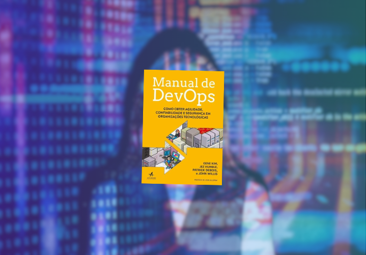
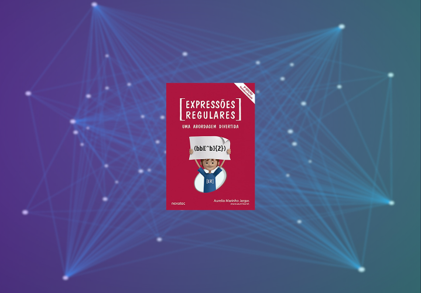

Nível Pleno
Refatoração: Aperfeiçoando o Design de Códigos Existentes
Escrito por Martin Fowler, é uma leitura obrigatória para qualquer
desenvolvedor de software. Com uma abordagem prática e envolvente,
Fowler nos guia pelo mundo da refatoração, mostrando como transformar
códigos confusos e complexos em estruturas mais limpas e eficientes.
Suas técnicas e exemplos ajudam a melhorar a qualidade do código,
tornando-o mais legível, fácil de manter e, acima de tudo, mais
elegante. Se você busca aprimorar suas habilidades de programação,
este livro é uma verdadeira jóia.
Todos os níveis
Engenharia de Software
Com uma abordagem abrangente e detalhada, Pressman explora os
fundamentos da engenharia de software, desde os conceitos básicos até
as metodologias mais avançadas. É uma leitura indispensável para
entender os processos de desenvolvimento de software, gerenciamento de
projetos, análise de requisitos, testes e muito mais. Com exemplos
práticos e insights valiosos, este livro me ajudou a aprimorar minha
compreensão e habilidades nessa área em constante evolução. Recomendo
fortemente a todos que desejam se aprofundar nesse campo tão essencial
da tecnologia.
Todos os níveis
Manual de DevOps: como obter agilidade, confiabilidade e segurança em
organizações tecnológicas

Escrito por Gene Kim, Jez Humble, Patrick Debois e John Willis, esse
livro revolucionou a maneira como as equipes de desenvolvimento e
operações colaboram. Com uma abordagem prática, ele explora os
princípios e práticas do DevOps, mostrando como integrar e automatizar
processos, aumentando a agilidade, confiabilidade e segurança dos
sistemas. Através de histórias reais e estudos de caso, o livro
oferece insights valiosos sobre a transformação cultural e técnica
necessária para alcançar o sucesso com o DevOps. Eu aprendi muito com
este livro e sua leitura me ajudou a acompanhar a eficiência e a
qualidade dos projetos em que trabalhei.
Todos os níveis
Código limpo: Habilidades práticas do Agile Software
Esse livro é um guia indispensável para qualquer desenvolvedor que
busca aprimorar suas habilidades de programação. Com uma abordagem
pessoal e envolvente, o autor enfatiza a importância de escrever
código claro, legível e bem protegido. Ao longo do livro, ele
compartilha princípios e boas práticas que nos ajudam a criar um
código limpo e de qualidade. Desde a escolha de nomes significativos
para variáveis e funções, até a organização adequada do código, cada
detalhe é preciso para facilitar a compreensão e a manutenção do
software. Ler este livro foi uma experiência transformadora para mim,
pois me ajudou a elevar minha habilidade de programação para um nível
profissional. Se você deseja se destacar como desenvolvedor, recomendo
fortemente a leitura deste livro. Ele certamente irá aprimorar sua
forma de escrever código.
Todos os níveis
O projeto fênix – Edição comemorativa: um romance sobre TI, DevOps e
sobre ajudar o seu negócio a vencer
Bill, gerente de TI da Parts Unlimited, recebe uma ligação do CEO na
segunda-feira de manhã. O Projeto Fênix, uma iniciativa crucial para o
futuro da empresa, está acima do orçamento e atrasado. O CEO exige que
Bill o reporte diretamente e resolva a situação. Com a ajuda de um
futuro membro do conselho e sua filosofia das Três Maneiras, Bill
descobre que o trabalho tem semelhanças com o chão de fábrica. Ele tem
90 dias para consertar o projeto, otimizar o departamento e melhorar
as funções de negócios. O livro "O Projeto Fênix" apresenta uma
história rápida e divertida, ensinando lições valiosas sobre
transformação do departamento de TI e melhorias nas organizações de
TI.
Nível Pleno
Expressões Regulares: Uma Abordagem Divertida

Quando você precisa procurar uma sigla de quatro letras em um texto
longo, use a expressão [A-Z]{4}. Se surgir a necessidade de corrigir
várias variações do nome "Müller" em um documento, utilize
M(i|ue|ü)ll?er. Além disso, as Expressões Regulares podem ser úteis
para encontrar palavras repetidas, garantir espaços após vírgulas e
pontos finais, e validar diversos tipos de dados, como e-mails, IPs,
telefones, datas, CEPs e CPFs. Essa poderosa ferramenta permite buscar
e formatar informações com facilidade e eficiência.